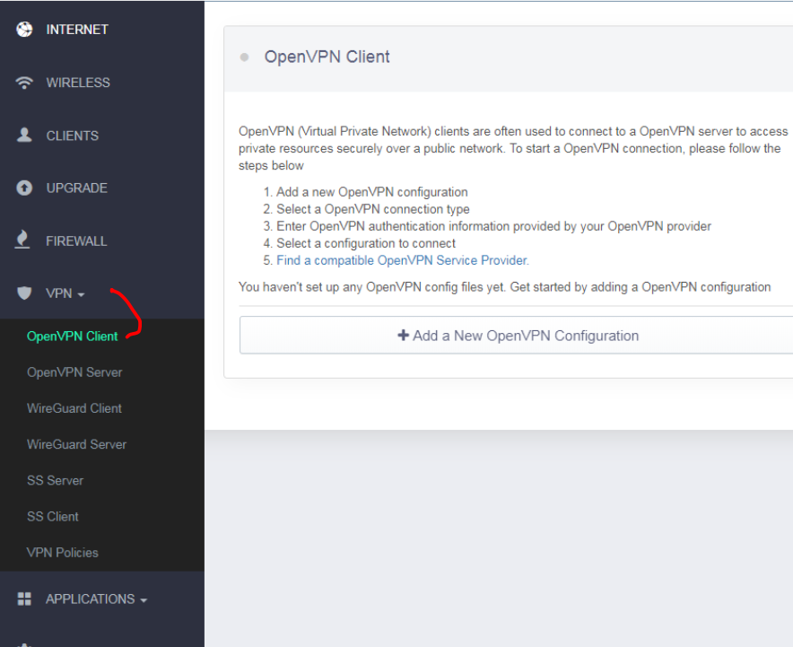

QR Codes: What is it, history and generation on your website
In this blog we will see what is QRCode,little bit of history of QR Codes and how to generate and scan QR Codes in your application
What is a QR CodeQR code stands for Quick Response code.Many of you might have not heard about QRCode but there is a high probability that you are subconsciously familiar with them.
What better can explain a QR Code than an image?
You can download any QR reader/scanner application from Google Playstore or Apple store. After downloading open the QR reader app and scan above QRCode. I have put my scan and the result image below
If you take a look at the images above, you'll notice that there is this graphic consisting of black squares and dots. This, essentially, is what a QR code looks like.
- Advantages of QR Code
- QRCode is a two dimensional barcode i.e you can say its an upraded version of barcodes. Upgraded because it can contain more information since they have the ability to hold information both horizontally and vertically(Barcodes only store horizontally).
- The idea behind a QR code is to create an image and that image can be quickly scanned by a Smartphone.Once you scan through this application, the QR image gets translated into something more useful.Like we saw in the image above where it gives the url of the website Surely you can just type in a web address on your phone and visit the website that way? While that may be true, the point of a QR code is to simplify the process. Smartphone (or tablet PC) keyboards are tricky compared to desktop/laptop keyboards and most of the time, people simply can't be bothered to type in website addresses on their Smartphone.
- The main advantage of a QR code is its versatility. QR codes can be used for anything and everything. They are also beneficial for both customers and businesses. For example, a business saves money and advertising costs by distributing a QR code to their website or URL.
- Popper Link to download
- Bootstrap CSS Link to download
- Fontawesome CSS Link to download
https://www.fastprint.co.uk/blog/quick-response-codes-what-are-they-and-how-do-they-work.html https://www.qr-code-generator.com/blog/how-qr-codes-work-and-their-history/ https://yourstory.com/mystory/the-story-of-qr-codes-past-present-and-future
- Below are the steps one should follow
- Buy a router that supports OpenVPN. You can buy it online and there are many options available. I bought online from Amazon.All you need to ensure before buying is that it supports OpenVPN.
- Power on the router. Pretty basic but should not be missed 😊
- Your ISP-Internet Service Provider might have provided you with a Wi-Fi-modem. My ISP's network had SSID of say BELONG-XXXX. This was the network i used to connect to so far to connect to internet(without VPN) This Wi-Fi modem shall have an Ethernet LAN port that can be used to connect to the router’s (the one you bought) WAN port . You can connect your ISP's modem to router by cable directly
- Now its time to connect your device(windows,android,ios etc) to the router. You can connect to the router via Ethernet cable or Wi-Fi.I connected through Wi-Fi (Am sure connecting through LAN will be equally simple as well) Doing so only connects your devices to the local area network (LAN) of the router. You cannot access the Internet currently
- Once connected to the router,you can search for the SSID of the router(must be provided in the router’s documentation). My router's SSID started with GL-XXXXX-XXX . To access the Web Admin panel I had to visit http://192.168.8.1 Once logged in, you can view the rotuer's Web Admin panel. Once connected, you can login to the web-based interface of the router.Once you succesfully log in, you will see the daashboard.I have added mine for reference only.Yours may look different obviously.
 Note: Look for the URL, Userid and the Password in the router’s documentation itself
Note: Look for the URL, Userid and the Password in the router’s documentation itself
- Web Admin panel allows you to check the status and manage the settings of the router.Once in the admin panel, configure your router to access the internet so that it can talk to the outside world. To do so,I clicked on the “repeater” settings of the router. It takes an existing signal from a wireless router or wireless access poin and rebroadcasts it to create a second network. In Repeater section, click Scan to search for the available wireless networks nearby (in my case the original wireless network with SSID BELONG-XXX).Connect using user ISP’s username and password
- Doing above would ensure that your router is communicating with outside world and you connect to the Internet even if you are connecting to the SSID of the router
So far we have configured router to connect to existing Wi-Fi network.We havenot setup VPN yet. Now lets look how to setup vpn.All major VPN providers like ExpressVPN ,Cyberghost,Surfshark etc allow you to download manual configuration Download the .ovpn file from the manual configuration page of your VPN provider. Each Server location (in my case as I was trying to connect to India-Mumbai) had an .ovpn file download option. Download the file to your Deskptop and save it. Note: I have used both ExpressVPN and Surfshark and the process is more or less same.Am sure it is similar with other VPN providers as well.I in this case will use Surfshark just because I have that currently but that doesn’t stop you from using your favorite VPN provider.
- Steps to follow on VPN provider's website
- Buy a subscription. Most of them offer a trial period of 30 days or so which is excellent option to try out
- I am taking an eg of SurfShark.Navigate to surfshark’s website https://support.surfshark.com/hc/en-us/categories/360001458953-Tutorial This link is available at the time of download.Basically you need to search how to setup manual configuration irrespective of which provider you are using
- Since am using Windows laptop i follow the steps to download .opvn file for windows device.I downloaded both .tcpovpn and .udpovpn files UDP and TCP are protocols with their own pros and cons.I wont get into depth of it but I would say The OpenVPN UDP protocol is usually a little bit faster, while OpenVPN TCP is usually a little bit more stable.However, that is not always the case, therefore, we always suggest trying them both out and checking what works best for you.
- Once you have downloaded this .opvn file, you will also have to copy paste service credential from surfsharks website as shown in img 4 below.Save these somewhere as you will need it soon

- Now go back to the routers admin panel for final steps
- Look for OpenVpn Client. My router’s webadmin had below settings as shown in img 2 
- Click on the OpenVPN client and you will see a page which asks you to add .ovpn file something like in img 3

- Drop the .ovpn file you saved on your machine(the file you saved on desktop in our earlier steps).It will ask for name(eg mumbai_myvpnserver1) just for you to identify the server location quickly. It will also ask for server's username and password).Copy paste the username and password your got from your vpn providers website(in this case surfshark)
- Click connect and you are all set to go.Happy surfing using VPN